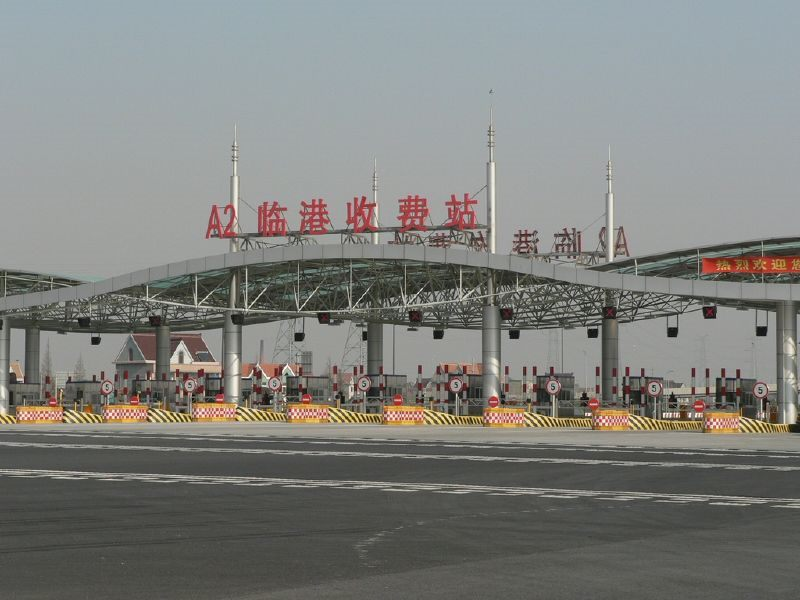

AI 투자 열기에 미 7월 무역적자 확대… 대만 흑자는 사상 최대
인공지능 관련 장비와 부품 수입이 늘면서 미국의 7월 무역적자가 확대됐다. 대만에 대한 미국의 적자는 사상 최대를 기록한 것으로 집계됐다.
전홍발 기자 · 2026.09.05
橋국제

미국의 7월 무역적자가 확대된 것으로 나타났다. 인공지능(AI) 관련 설비 투자 열기가 수입을 끌어올린 것이 배경으로 지목된다.
광고 문의 · 300×250AI 데이터센터를 짓는 데는 서버와 가속기, 네트워크 장비, 전력·냉각 설비가 함께 필요하다. 이들 품목의 상당 부분이 동아시아에서 생산돼 미국으로 들어간다.
그 결과 대만에 대한 미국의 무역적자가 사상 최대 수준으로 확대됐다. 대만이 반도체와 서버 조립의 핵심 공급처라는 산업 구조가 통계에 그대로 반영된 것이다.
무역적자 수치를 해석할 때 유의할 점이 있다. 설비 투자를 위한 자본재 수입은 소비재 수입과 성격이 다르며, 국내 생산 능력을 키우는 투자와 함께 늘어나는 경우가 많다.
통상 정책 측면에서는 적자 숫자가 협상 소재로 쓰이는 흐름이 이어져 왔다. 관세 부과나 현지 생산 요구의 근거로 인용되는 사례가 반복된다.
한국 기업에도 같은 구조가 걸려 있다. 반도체와 장비, 부품을 미국에 공급하는 기업일수록 통계상 흑자와 통상 압력이 함께 커진다.
본지는 무역수지 자체를 우열의 지표로 다루지 않는다. 어떤 품목이 왜 이동했는지를 함께 보아야 숫자의 의미가 드러난다.
출처·참고 (사실 확인용 — 본문은 직접 재작성)
· https://news.ltn.com.tw/
· https://news.ltn.com.tw/